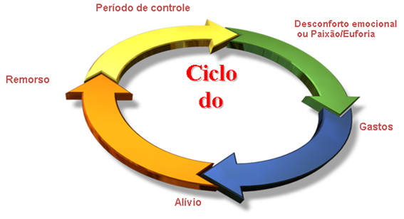

Compulsão por Compras
O que é?
A Compulsão por Compras é um Transtorno do Impulso, onde existe um desejo incontrolável de comprar sem que haja nenhuma necessidade ou objetivo específico com o compra do objeto. O paciente sente prazer momentâneo com a obtenção daquilo que comprou, mas imediatamente é tomado pela culpa por não ter resistido e comprado novamente algo que não precisava, e muitas vezes nem podia comprar. As vezes, a pessoa passa muito tempo numa luta interna, tentando se convencer mentalmente dos motivos para não comprar, porém, na maioria das vezes, não aguenta e cede ao impulso de comprar.
Qual o nível de Sofrimento?
O nível de sofrimento do Comprador Compulsivo é intenso, pois o paciente se sente refém da situação. Racionalmente ele sabe que não precisa comprar aquilo, muitas vezes já existe até um acúmulo em casa, mas mesmo assim ele não consegue evitar a compra, gerando um sentimento de culpa e fracasso muito grande. Além disso, constantemente a vida financeira do comprador compulsivo acaba ficando extremamente prejudicada com o descontrole com os gastos.
Sintomas
- Descontrole no ato de Comprar;
- Comprar escondido dos familiares;
- Mentir sobre valor real dos gastos financeiros com compras;
- Sentimento de Ansiedade antes de Comprar;
- Sentir vontade de comprar quando se sentir triste / irritado, etc;
- Sentimento de Vergonha e Culpa depois de Comprar;
- Vida financeira comprometida pelos excessos.
Ciclo da Compulsão por Compras
Tratamento
O tratamento para a Compulsão por Compras é feito através de uma equipe Multidisciplinar: Psiquiatra e Psicólogo. O psiquiatra irá acompanhar o caso e indicar uma medicação adequada ao paciente de forma a reduzir os sintomas de Ansiedade, Depressão, controle da Impulsividade e outros de acordo com cada paciente.Já o psicólogo irá atuar no tratamento através da Psicoterapia, que é parte fundamental neste processo. Para tratar o problema não podemos cuidar apenas dos sintomas, mas também das causas emocionais e comportamentais que envolvem os sintomas. O acompanhamento é semanal, podendo ser em grupo ou individual, em que serão abordadas as principais questões correlacionadas ao desenvolvimento do transtorno, fortalecimento do paciente para lidar com as crises, técnicas de diminuição da ansiedade e enfrentamento.Procure um profissional capacitado para orientar o tratamento.
Dicas para controlar !
Abaixo seguem algumas dicas para ajudar a lidar com o problema, porém nada substitui a necessidade de um acompanhamento:
- Saia de casa com o dinheiro necessário para suas despesas diárias;
- Evite sair com cartão de crédito e débito;
- Avalie a possibilidade de cancelar cartão de crédito por um período;
- Não carregue folhas de cheque;
- Não pegue cartões, cheques ou dinheiro de terceiros – Você começa a aumentar o problema e envolver outras pessoas;
- Evite passar por muitas lojas quando estiver muito feliz ou muito triste;
- Explique a dimensão do problema para alguém em quem confie e possa ser rede de apoio nos momentos de dificuldade;
- Aprenda a se questionar, antes de comprar comece a fazer o exercício de checar a necessidade disso e lembre-se de como você se sente depois de comprar.
Quem escreve?

FABÍOLA LUCIANO
.Psicóloga especialista formada pela USP
CRP 104468
 https://www.linkedin.com/uas/login?goback=&trk=hb_signin
https://www.linkedin.com/uas/login?goback=&trk=hb_signin